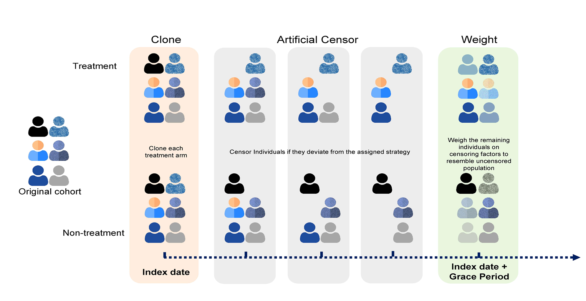

Target Trial Emulation
Reflection on modern methods
Introduction
What we want
RCT
- Ideal BUT not always
- Ethical
- Feasible
- Timely
RCT: Ethics
- Absence of clinical equipose
- SUPPORT trial controversy
RCT: Feasibility
- Median age at NSCLC diagnosis: 73.5yrs
- RCT: half under 60
- Rare disease?
RCT: Feasibility
RCT: Time
- Later confirmed by randomized trial
Real World Data
- Need for observational Studies…
- BUT
RWD: Confounding
RWD: Time zero problem
- Eligibility is met(E)
- Time to start follow up(T0)
- Assignment (A)
RWD: Time zero problem
- Example
- E: Lung cancer Dx
- T: Start of Follow-up
- A: Surgery(Control) assignment
RWD: Time zero problem
- RCT
RWD: Time zero problem
- Prevalent user bias
- E: Cancer
- T0:Follow up
- A: Statin assign
RWD: Time zero problem
- HR 0.85(0.82-0.87)
RCT
-HR 1.00(0.93-1.08)
RWD: Time zero problem
- Immortal time bias
- E: Menopause
- T0: Start Follow-up
- A: HRT assignment
RWD: Time zero problem
- RR 0.61 (0.52-0.71)
- “Women were asked about use and duration of hormone therapy after menopause.(Updated biennially)”
RCT
- HR 1.23 (0.99-1.53)
Target Trial Emulation
Back to Question
How about?
- Emulate RCT to avoid bias!
Key components of protocol
- Eligibility criteria
- Start and End of F/U
- Treatment strategies
- Outcomes of interest
- Casual contrast
- Data Analysis plan
TTE: Treatment strategies
- E: eGFR < 30
- Group A: eGFR 10-14
- Group B: eGFR 5-7
- Before trial, observational studies investigating this causal question showed a strong survival advantage for late dialysis start
TTE: Treatment strategies
- Lets consider Observational trial
- Can we assign Individual to Unique strategies?
- Ex) Individual with eGFR 16 at FU 1month
- Strategy A or B?
TTE: CloneCensor Weight method
- Why not All?
- Double allocation: prevents bias of random assignment
- Just Clone and censor 
TTE: Clone Censor Weight method
Specific Analysis | Correct Study Design | Biases Introduced | Confounding Adjustment Necessary | Hazard Ratio (95% CI) |
|---|---|---|---|---|
Randomized IDEAL trial | Yes | — | No | 1.04 (0.83 to 1.30) |
Target trial emulation analysis | Yes | — | Yes | 0.96 (0.94 to 0.99) |
Common but biased analysis 1 | No | Selection bias (depletion of susceptibles), lead time bias | Yes | 1.58 (1.19 to 1.78) |
Common but biased analysis 2 | No | Immortal time bias | Yes | 1.46 (1.19 to 1.78) |
TTE: Is there Immediate Assignment?
- Do we recieve surgery at the moment diagnosed?
- No
- Grace period!
- Real world: investigators need to define grace period after time zero during which initiation is still considered to be immediate
TTE: Is there Immediate Assignment?
- If 6 months: surgery at 1 month, 3month -> Can be on Tx group!
- Redefinition of intervention(Ex. Control vs Surgery in 6M)
- Death before 6 month?
TTE: Clone censor weight with grace period
TTE: Clone censor weight with grace period
TTE: Clone censor weight with grace period

TTE: Clone censor weight with grace period
TTE: Clone censor weight with grace period
TTE: Time zero problem
- Impossible to assign unique treatment to each individual
- Clone individual
- Double allocation: prevents bias of random assignment
TTE: Time zero problem
- Individuals included in analysis multiple times
- Bootstrap
TTE: Time zero problem
- Non-unique choice of time-zero
- Ex) HRT among postmenopausal women with no use of HRT for previous 2 years
- Solution?
ITT: is it possible?
- Closest Analog: Comparison of initiation strategy
- If RCT?: All people not taking treatment at baseline->goes to same group
- If initiation occurs shorly after assignment to treatment-> observation analogue roughly preserves key feature
TTE: Time zero problem
- First eligible time
- Randomly chose eligible time
- Every eligible time: Multiple sequential trial
Multiple Sequential Trial Emulation
Target Trial Emulation